Hands-on Exercise 5d - Visual Multivariate Analysis with Parallel Coordinates Plot
5.1 Overview
Parallel coordinates plot is designed for visualising multivariate numerical data. Instead of comparing only two variables at a time, it places many numerical variables on parallel vertical axes and draws one line for each observation.
In this exercise, we use the World Happiness 2018 dataset. Each country is represented by one line, and the variables include happiness score, GDP per capita, social support, healthy life expectancy, freedom, generosity, and perceptions of corruption.
By the end of this exercise, we will be able to:
- create static parallel coordinates plots using
ggparcoord()from theGGallypackage, - group parallel coordinate lines by geographical region,
- improve readability using scaling, transparency, boxplots, facets, and rotated labels,
- create interactive parallel coordinates plots using
parallelPlot, - add a small extension to compare regional happiness profiles.
ImportantImportant
Parallel coordinates plot is mainly an analytical visualisation.
It is useful for exploring multivariate patterns, but it can become visually crowded when there are many observations.
5.2 Installing and Launching R Packages
For this exercise, the main packages are GGally, parallelPlot, and tidyverse.
pacman::p_load(
tidyverse,
GGally,
parallelPlot,
DT,
janitor,
scales
)5.3 Data Preparation
The dataset used in this exercise is WHData-2018.csv. It contains country-level World Happiness indicators for 2018.
5.3.1 Importing data
Rows: 156
Columns: 12
$ Country <chr> "Albania", "Bosnia and Herzegovina", "B…
$ Region <chr> "Central and Eastern Europe", "Central …
$ `Happiness score` <dbl> 4.586, 5.129, 4.933, 5.321, 6.711, 5.73…
$ `Whisker-high` <dbl> 4.695, 5.224, 5.022, 5.398, 6.783, 5.81…
$ `Whisker-low` <dbl> 4.477, 5.035, 4.844, 5.244, 6.639, 5.66…
$ Dystopia <dbl> 1.462, 1.883, 1.219, 1.769, 2.494, 1.45…
$ `GDP per capita` <dbl> 0.916, 0.915, 1.054, 1.115, 1.233, 1.20…
$ `Social support` <dbl> 0.817, 1.078, 1.515, 1.161, 1.489, 1.53…
$ `Healthy life expectancy` <dbl> 0.790, 0.758, 0.712, 0.737, 0.854, 0.73…
$ `Freedom to make life choices` <dbl> 0.419, 0.280, 0.359, 0.380, 0.543, 0.55…
$ Generosity <dbl> 0.149, 0.216, 0.064, 0.120, 0.064, 0.08…
$ `Perceptions of corruption` <dbl> 0.032, 0.000, 0.009, 0.039, 0.034, 0.17…csv_file <- list.files(pattern = "WHData-2018.*\\.csv$")[1]
wh <- read_csv(csv_file, show_col_types = FALSE)
glimpse(wh)Rows: 156
Columns: 12
$ Country <chr> "Albania", "Bosnia and Herzegovina", "B…
$ Region <chr> "Central and Eastern Europe", "Central …
$ `Happiness score` <dbl> 4.586, 5.129, 4.933, 5.321, 6.711, 5.73…
$ `Whisker-high` <dbl> 4.695, 5.224, 5.022, 5.398, 6.783, 5.81…
$ `Whisker-low` <dbl> 4.477, 5.035, 4.844, 5.244, 6.639, 5.66…
$ Dystopia <dbl> 1.462, 1.883, 1.219, 1.769, 2.494, 1.45…
$ `GDP per capita` <dbl> 0.916, 0.915, 1.054, 1.115, 1.233, 1.20…
$ `Social support` <dbl> 0.817, 1.078, 1.515, 1.161, 1.489, 1.53…
$ `Healthy life expectancy` <dbl> 0.790, 0.758, 0.712, 0.737, 0.854, 0.73…
$ `Freedom to make life choices` <dbl> 0.419, 0.280, 0.359, 0.380, 0.543, 0.55…
$ Generosity <dbl> 0.149, 0.216, 0.064, 0.120, 0.064, 0.08…
$ `Perceptions of corruption` <dbl> 0.032, 0.000, 0.009, 0.039, 0.034, 0.17…Using list.files() makes the render safer because the code will still work if the file name contains a small suffix such as (2).
5.3.2 Checking the data structure
DT::datatable(
head(wh, 12),
rownames = FALSE,
class = "compact stripe hover",
options = list(pageLength = 12, scrollX = TRUE),
width = "100%"
)The key numerical variables are located from column 7 to column 12:
- GDP per capita
- Social support
- Healthy life expectancy
- Freedom to make life choices
- Generosity
- Perceptions of corruption
5.3.3 Creating colour palette by region
region_levels <- sort(unique(wh$Region))
region_palette <- setNames(
rep(
c(
my_teal,
my_soft_teal,
my_warning,
my_red,
"#4F7C82",
"#7A9E7E",
"#C9A66B",
"#6E7582",
"#9B7E93",
"#3F5E5A"
),
length.out = length(region_levels)
),
region_levels
)The palette keeps the page consistent with the deep muted teal style while still giving enough colours for the different regions.
5.4 Plotting Static Parallel Coordinates Plot
This section follows the ggparcoord() method from the GGally package.
5.4.1 Plotting a simple parallel coordinates plot
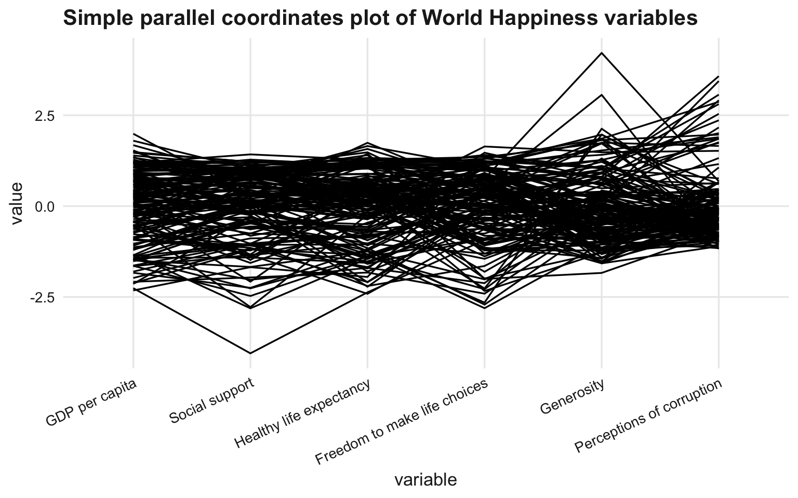
GGally::ggparcoord(
data = wh,
columns = c(7:12)
) +
labs(
title = "Simple parallel coordinates plot of World Happiness variables"
) +
theme_yy +
theme(
axis.text.x = element_text(angle = 25, hjust = 1),
legend.position = "none"
)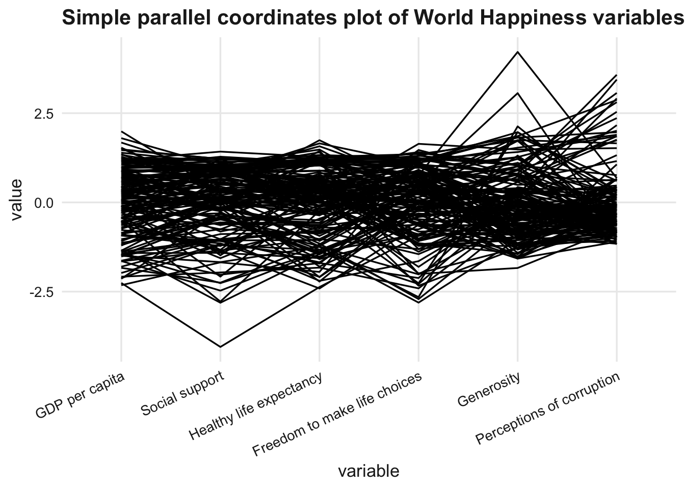
This first version is useful as a starting point, but it is visually crowded. Since all countries are drawn together, the regional pattern is not easy to see.
5.4.2 Plotting a parallel coordinates plot with boxplot
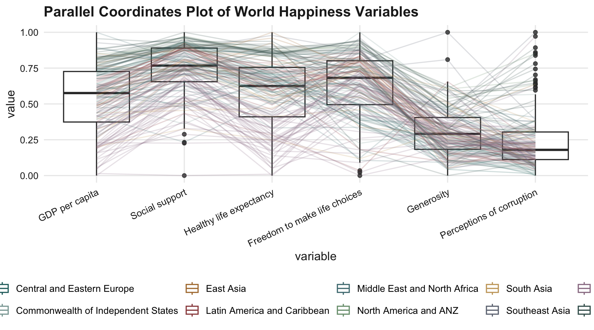
GGally::ggparcoord(
data = wh,
columns = c(7:12),
groupColumn = 2,
scale = "uniminmax",
alphaLines = 0.2,
boxplot = TRUE,
title = "Parallel Coordinates Plot of World Happiness Variables"
) +
scale_colour_manual(values = region_palette) +
theme_yy +
theme(
axis.text.x = element_text(angle = 25, hjust = 1)
)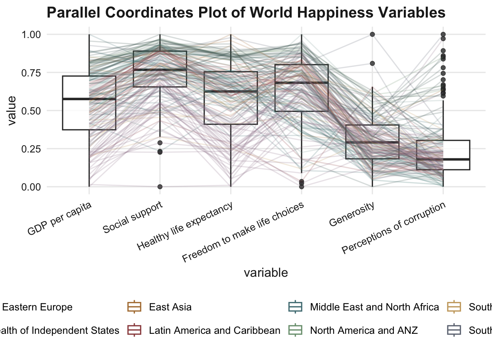
The groupColumn argument colours the lines by region. The scale = "uniminmax" argument rescales each variable from 0 to 1, making variables with different units comparable.
TipWhat can we learn?
The boxplot layer gives a quick view of the distribution of each variable.
The lines show country-level profiles, while the boxplots summarise the overall spread.
5.4.3 Parallel coordinates with facet
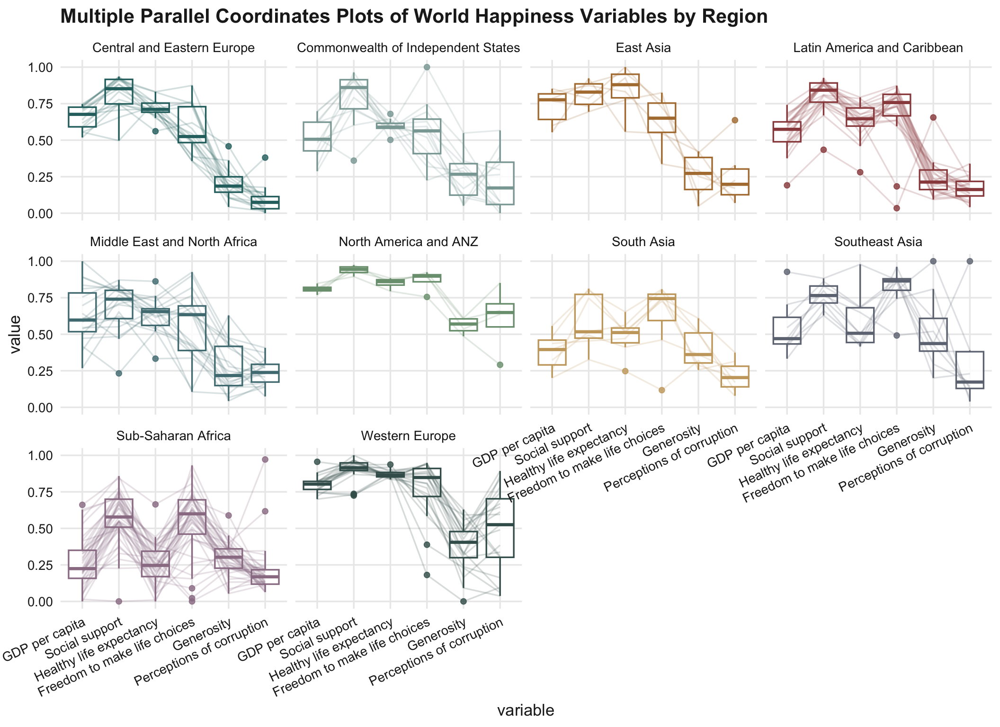
GGally::ggparcoord(
data = wh,
columns = c(7:12),
groupColumn = 2,
scale = "uniminmax",
alphaLines = 0.2,
boxplot = TRUE,
title = "Multiple Parallel Coordinates Plots of World Happiness Variables by Region"
) +
scale_colour_manual(values = region_palette) +
facet_wrap(~ Region) +
theme_yy +
theme(
axis.text.x = element_text(angle = 25, hjust = 1),
legend.position = "none"
)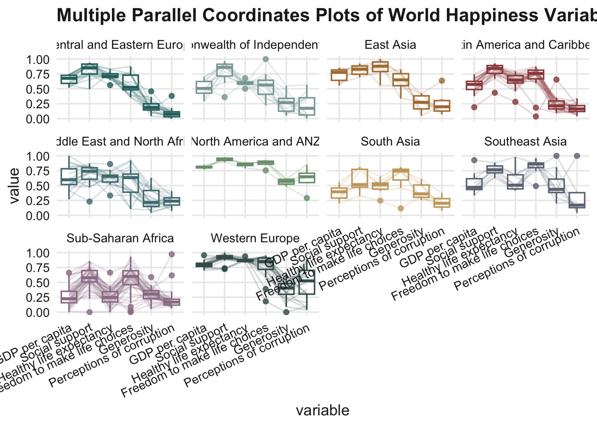
Faceting makes the plot easier to read because each region is shown separately. This is helpful when the full plot is too dense.
5.4.4 Rotating x-axis text labels
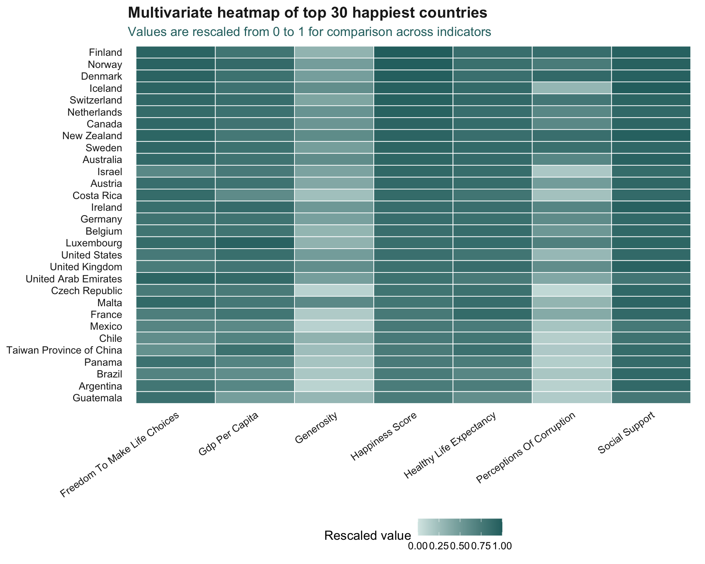
GGally::ggparcoord(
data = wh,
columns = c(7:12),
groupColumn = 2,
scale = "uniminmax",
alphaLines = 0.2,
boxplot = TRUE,
title = "Parallel Coordinates Plot with Rotated Axis Labels"
) +
scale_colour_manual(values = region_palette) +
facet_wrap(~ Region) +
theme_yy +
theme(
axis.text.x = element_text(angle = 30),
legend.position = "none"
)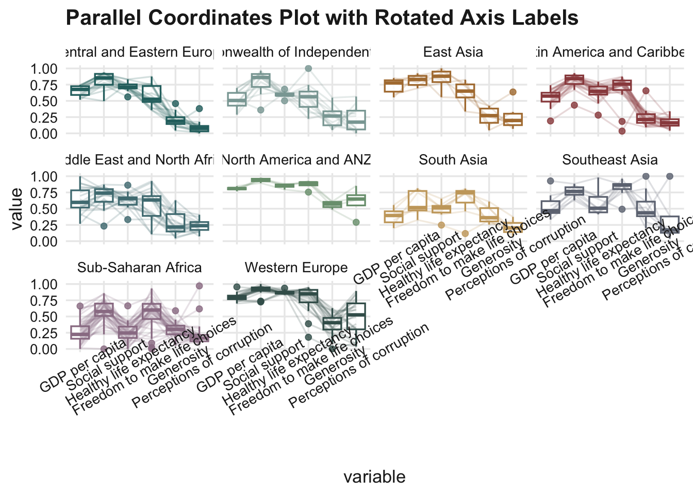
Rotating the x-axis labels reduces label overlap, but the text may still sit too close to the plot.
5.4.5 Adjusting the rotated x-axis text labels
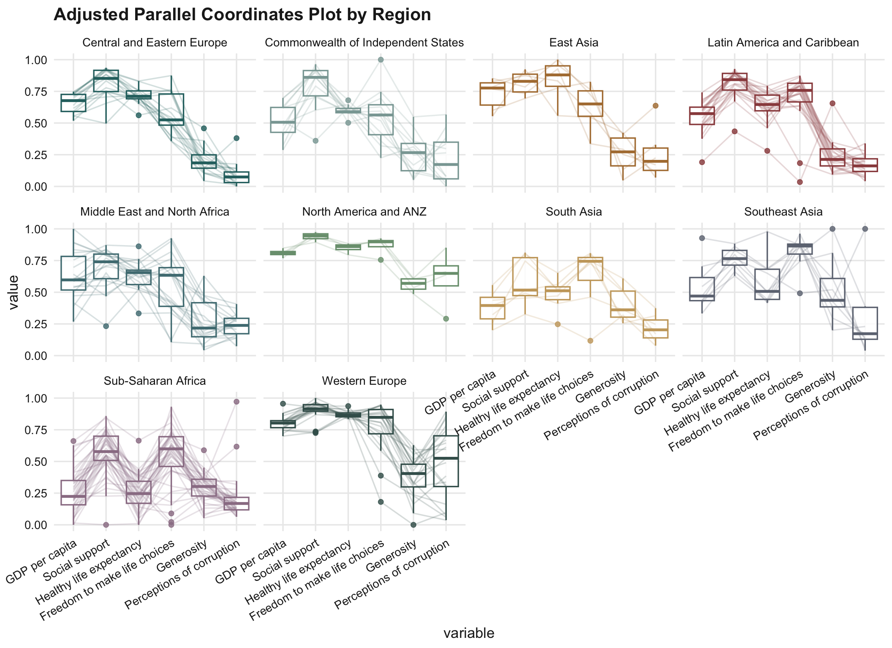
GGally::ggparcoord(
data = wh,
columns = c(7:12),
groupColumn = 2,
scale = "uniminmax",
alphaLines = 0.2,
boxplot = TRUE,
title = "Adjusted Parallel Coordinates Plot by Region"
) +
scale_colour_manual(values = region_palette) +
facet_wrap(~ Region) +
theme_yy +
theme(
axis.text.x = element_text(angle = 30, hjust = 1),
legend.position = "none"
)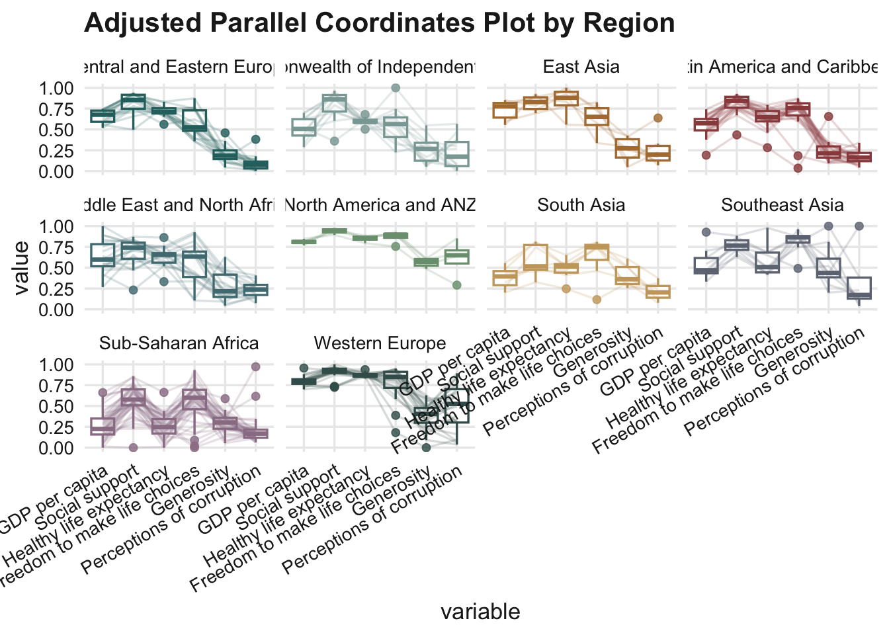
The hjust = 1 setting aligns the rotated labels better and makes the plot easier to read.
5.5 Plotting Interactive Parallel Coordinates Plot
The parallelPlot package creates interactive parallel coordinates plots using htmlwidgets.
5.5.1 Preparing data for interactive plot
wh_parallel <- wh %>%
select(
`Happiness score`,
`GDP per capita`,
`Social support`,
`Healthy life expectancy`,
`Freedom to make life choices`,
Generosity,
`Perceptions of corruption`
)
DT::datatable(
head(wh_parallel, 12),
rownames = FALSE,
class = "compact stripe hover",
options = list(pageLength = 12, scrollX = TRUE),
width = "100%"
)Only numerical variables are selected for the interactive parallel coordinates plot.
5.5.2 The basic interactive plot
parallelPlot::parallelPlot(
wh_parallel,
width = 760,
height = 420
)The basic interactive plot allows the reader to inspect patterns across several variables. However, some axis labels are long and can overlap.
5.5.3 Rotating axis labels
parallelPlot::parallelPlot(
wh_parallel,
rotateTitle = TRUE,
width = 760,
height = 420
)The rotateTitle = TRUE argument makes the axis labels easier to read.
5.5.4 Changing the colour scheme
parallelPlot::parallelPlot(
wh_parallel,
continuousCS = "YlOrRd",
rotateTitle = TRUE,
width = 760,
height = 420
)The continuousCS argument changes the continuous colour scheme. This helps when the reader wants stronger colour contrast during interactive inspection.
5.5.5 Parallel coordinates plot with histogram
histoVisibility <- rep(TRUE, ncol(wh_parallel))
parallelPlot::parallelPlot(
wh_parallel,
rotateTitle = TRUE,
histoVisibility = histoVisibility,
width = 760,
height = 420
)The histogram layer shows the distribution of each variable along its axis. This makes the interactive plot more informative.
TipWhat can we learn?
Interactive parallel coordinates are useful because users can inspect relationships dynamically.
The histogram option adds distribution information to each axis.
5.6 Extra Analysis: Regional Average Profile
This small extension summarises the average World Happiness profile by region. It is still within the parallel coordinates topic because it reduces country-level noise and compares regional profiles.
5.6.1 Preparing regional average data
region_profile <- wh %>%
group_by(Region) %>%
summarise(
`Happiness score` = mean(`Happiness score`, na.rm = TRUE),
`GDP per capita` = mean(`GDP per capita`, na.rm = TRUE),
`Social support` = mean(`Social support`, na.rm = TRUE),
`Healthy life expectancy` = mean(`Healthy life expectancy`, na.rm = TRUE),
`Freedom to make life choices` = mean(`Freedom to make life choices`, na.rm = TRUE),
Generosity = mean(Generosity, na.rm = TRUE),
`Perceptions of corruption` = mean(`Perceptions of corruption`, na.rm = TRUE),
.groups = "drop"
)
DT::datatable(
region_profile %>%
mutate(across(where(is.numeric), ~ round(.x, 3))),
rownames = FALSE,
class = "compact stripe hover",
options = list(pageLength = 10, scrollX = TRUE),
width = "100%"
)5.6.2 Parallel coordinates plot of regional averages
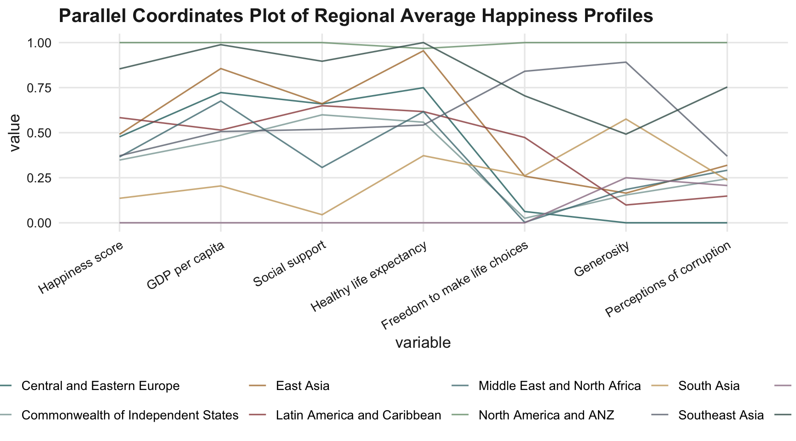
GGally::ggparcoord(
data = region_profile,
columns = c(2:8),
groupColumn = 1,
scale = "uniminmax",
alphaLines = 0.8,
title = "Parallel Coordinates Plot of Regional Average Happiness Profiles"
) +
scale_colour_manual(values = region_palette) +
theme_yy +
theme(
axis.text.x = element_text(angle = 30, hjust = 1)
)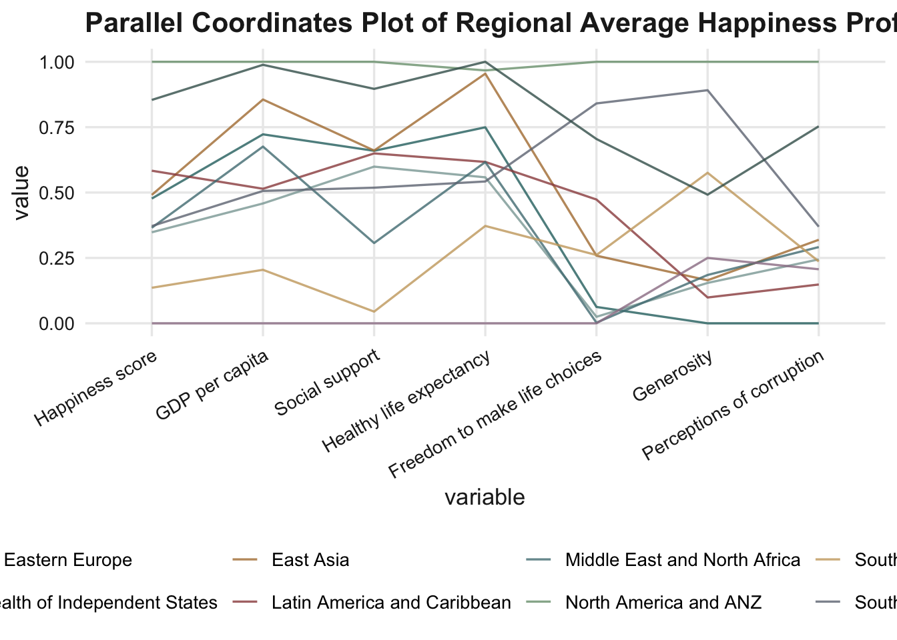
This regional version is less crowded than the country-level plot. It helps compare the broad profile of each region.
5.7 Extra Analysis: Top and Bottom Happiness Countries
This extension compares the highest and lowest happiness score countries. It is useful because parallel coordinates can show whether high-happiness countries share similar profiles across GDP, health, social support, and freedom.
5.7.1 Preparing top and bottom countries
top_bottom_countries <- bind_rows(
wh %>%
arrange(desc(`Happiness score`)) %>%
slice_head(n = 8) %>%
mutate(Group = "Top 8"),
wh %>%
arrange(`Happiness score`) %>%
slice_head(n = 8) %>%
mutate(Group = "Bottom 8")
)5.7.2 Parallel coordinates plot for top and bottom countries
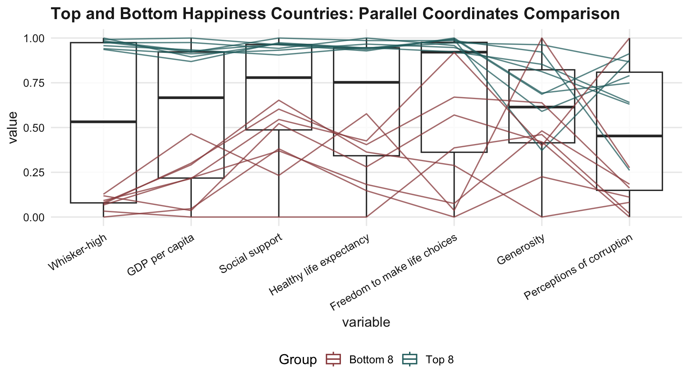
GGally::ggparcoord(
data = top_bottom_countries,
columns = c(4, 7:12),
groupColumn = "Group",
scale = "uniminmax",
alphaLines = 0.75,
boxplot = TRUE,
title = "Top and Bottom Happiness Countries: Parallel Coordinates Comparison"
) +
scale_colour_manual(
values = c(
"Top 8" = my_teal,
"Bottom 8" = my_red
)
) +
theme_yy +
theme(
axis.text.x = element_text(angle = 30, hjust = 1)
)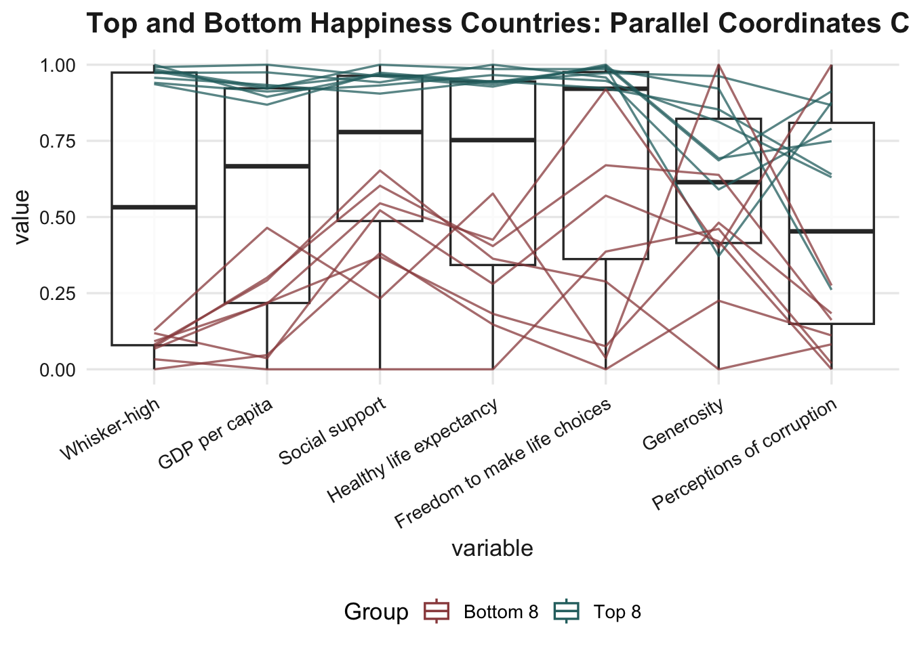
The top and bottom group comparison makes the multivariate contrast clearer than looking at all 156 countries at once.
5.8 Extra Analysis: Relationship Strength with Happiness Score
This final extension supports the parallel coordinates analysis by showing which variables are most associated with happiness score.
5.8.1 Computing correlations with happiness score
happiness_cor <- wh %>%
select(
`Happiness score`,
`GDP per capita`,
`Social support`,
`Healthy life expectancy`,
`Freedom to make life choices`,
Generosity,
`Perceptions of corruption`
) %>%
summarise(
across(
-`Happiness score`,
~ cor(.x, `Happiness score`, use = "pairwise.complete.obs")
)
) %>%
pivot_longer(
cols = everything(),
names_to = "Variable",
values_to = "Correlation"
) %>%
arrange(desc(Correlation))5.8.2 Bar chart of correlations with happiness score
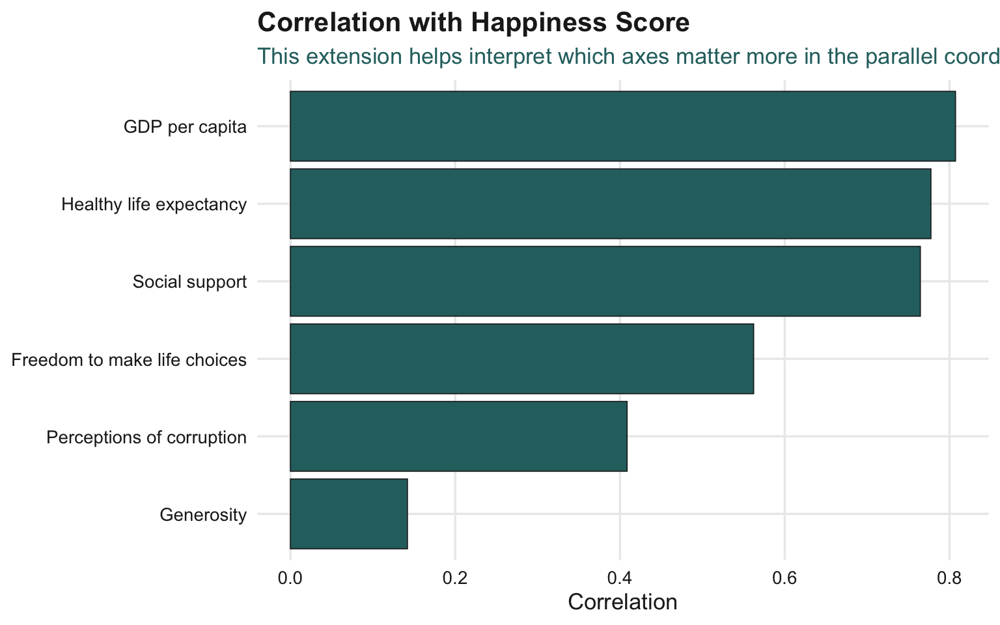
ggplot(
happiness_cor,
aes(
x = fct_reorder(Variable, Correlation),
y = Correlation
)
) +
geom_col(
fill = my_teal,
colour = my_dark,
linewidth = 0.3
) +
coord_flip() +
labs(
title = "Correlation with Happiness Score",
subtitle = "This extension helps interpret which axes matter more in the parallel coordinates plot",
x = NULL,
y = "Correlation"
) +
theme_yy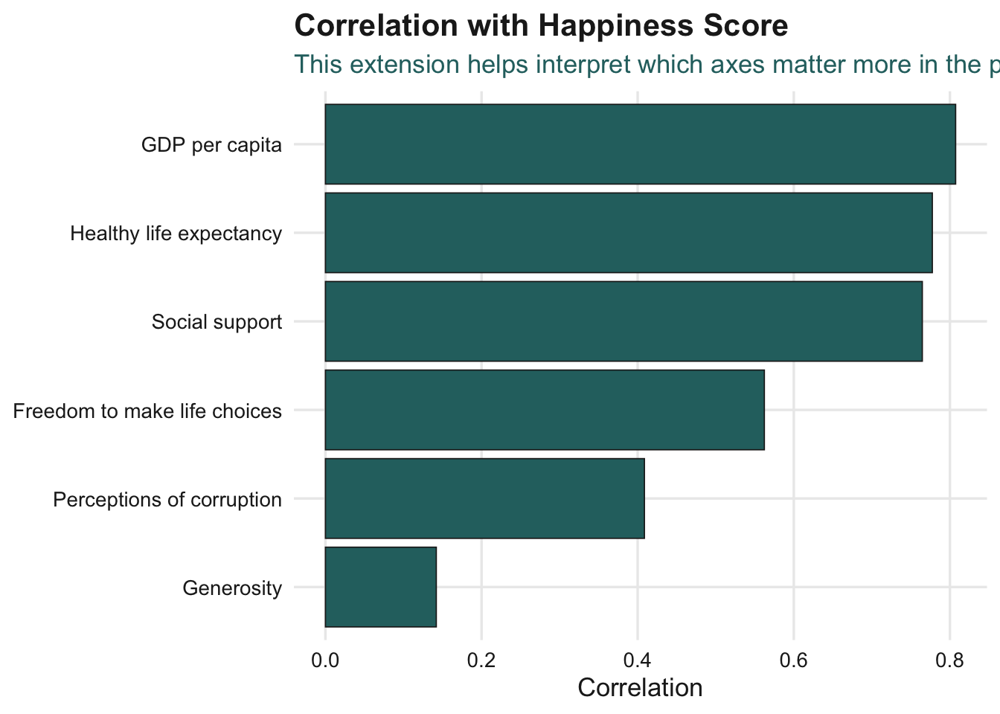
This bar chart is not a replacement for the parallel coordinates plot. It is a supporting view that helps explain which variables are most closely related to happiness score.
5.9 Final Takeaway
Parallel coordinates plots are useful for exploring high-dimensional numerical data. They allow many variables to be compared in one visual frame.
In this exercise, the static ggparcoord() plots help compare World Happiness indicators by region. The interactive parallelPlot charts allow more flexible inspection. The extra regional and top-bottom comparisons reduce visual clutter and make the interpretation clearer.
TipFinal takeaway
Use parallel coordinates plots when the key question is about multivariate profiles.
They are strongest for exploration, comparison, and pattern detection across many numerical variables.
5.10 References
This exercise covered:
ggparcoord()from theGGallypackage,- static parallel coordinates plots,
- grouped and faceted parallel coordinates plots,
- rotated and adjusted axis labels,
- interactive parallel coordinates plots using
parallelPlot, - histogram-enhanced interactive plots,
- regional average profiles,
- top-versus-bottom happiness country comparison.